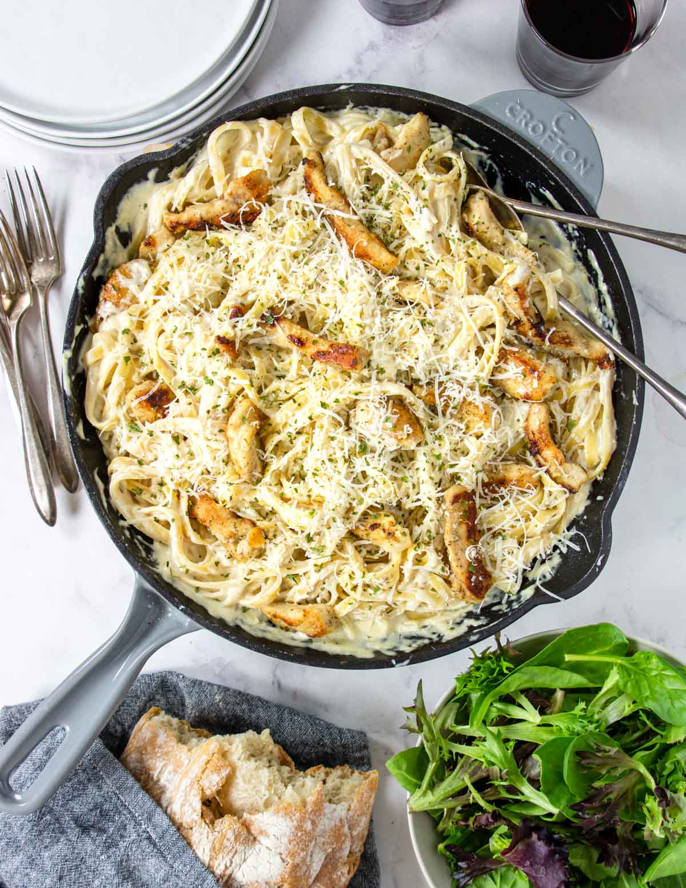

Chicken Alfredo

From the soothing, thick sauce that coats every inch, to the never-ending noodle slides that deliver the flavor straight to your taste buds, this creamy Chicken Alfredo recipe is sure to bring a web of comfort to any dinner plate!
Many people looking for a way to liven up their nighttime menus will often look to Italian cuisine to satisfy their desires; the rich mix of carbs, sauces, seasonings, and garnishes will surely satiate any appetite and then some. The heart of these dishes is in the company you share them with, which makes these meals so easy to parse out amongst family and friends.
My personal favorite of the bunch is the classic Chicken Alfredo: a simplistic "no nonsense" dish that makes no fuss in bringing the flavor straight to you.
If you're looking for a great meal that fully lives in every bite, is easy to share with those you love, or will indulge you with a wonderful treat, this creamy Chicken Alfredo recipe will be the perfect addition to your dinner cookbook!
Ingredients:
- Chicken
- 1 lb boneless/skinless chicken breast
- Salt & pepper
- 11⁄3 cup all purpose flour
- 2 Tbsp olive oil
- Pasta
- Alfredo
- 3 Tbsp butter
- 4 garlic cloves (minced)
- 1 Tbsp all purpose flour
- 1⁄2 cup chicken broth
- 2 cups heavy whipping cream
- 3⁄4 tsp salt
- 1⁄4 tsp onion powder
- 1 cup shredded parmesan cheese
- Garnish
- Extra parmesan cheese and/or parsley
Instructions:
- Boil a large pot of salted water (to cook the pasta)
- Cut the chicken into strips and then season with salt and pepper. Dredge the chicken in flour
- In a large non-stick skillet add the olive oil, cook the chicken until it is cooked through (165°F internal temp.). Set aside and cover to keep warm
- Place the pasta in the boiling water and cook al dente according to package instructions while you make the alfredo sauce
- In the now empty non-stick skillet add the butter and garlic. Sauté for 2 minutes. Add the flour and stir it in the pan to mix with the butter, cook for 1 minute
- Whisk in the chicken broth, then add kosher salt, and onion powder. Simmer for 1 minute
- Now whisk in the heavy cream and let it simmer over low heat for 5 minutes
- Remove from the heat and add the parmesan cheese to the sauce and stir until it is melted and incorporated
- Stir the cooked pasta into the sauce, top with the cooked chicken and garnish with parsley and/or extra parmesan cheese